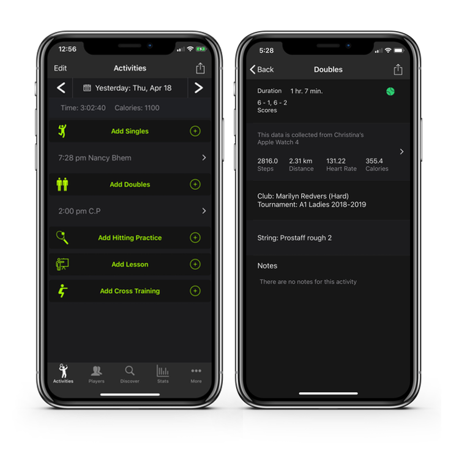

TennisKeeper lets you track all Your Racquet Sports activities such as
match scores, hitting practices, lessons, swing shots, court conditions, cross training,
court movement, tournament events, how you play and how you feel.

How does it work?
TennisKeeper helps you track your racquet sports workouts and monitor your progress. It does this by letting you track 5 types of activities:
- Singles matches
- Doubles matches
- Hitting practices
- Lessons
- Cross training such as running or yoga that can improve your fitness
After logging the events, you can visualize your progress, for example your match stats or your calories burned. By showing you your progress, TennisKeeper can help you stay motivated and improve.
TennisKeeper can also help you take your game to a new level. It provides easy to use templates so that you can document your opponent's game style. You can enter your opponent's style, strength, weakness and even line calls tendency. You can do it right after your match when your memory is still fresh. Next time you meet them on the court again, their profile will be at your fingertips and you can formulate a game plan against them.